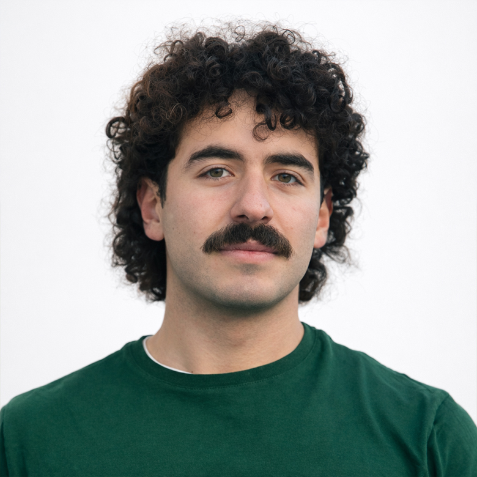
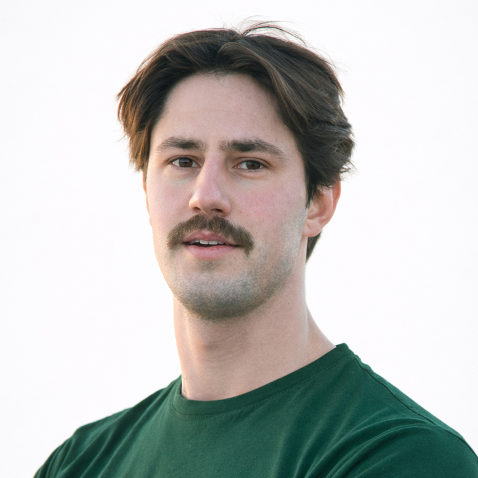

Due persone. Un’unica direzione
The Smuggle nasce dall’incontro di competenze diverse ma complementari: ricerca e metodo scientifico, sport e azione concreta, comunicazione e organizzazione per superare le barriere della disuguaglianza.
L'Origine
The Smuggle non è solo un'iniziativa di due singoli individui, ma il punto di convergenza tra la medicina, la bioingegneria e l'impegno umanitario. Crediamo che l'innovazione scientifica debba essere aperta, accessibile e orientata esclusivamente a ridurre le distanze sanitarie globali.

Studente di Medicina e Ingegneria Biomedica presso Humanitas University. Dopo un anno di studi all’Università Bocconi, ha scelto di orientarsi verso un percorso diverso.
Fin dall’ottenimento della borsa di studio che gli ha permesso di proseguire in Humanitas, ha definito come obiettivo l’applicazione di soluzioni essenziali e sostenibili nei contesti a risorse limitate. È interessato alla salute globale e all’innovazione “a impatto”, con l’idea che anche interventi semplici e scalabili possano contribuire concretamente a ridurre disuguaglianze nell’accesso alle cure.

Studente di Medicina e Ingegneria Biomedica, porta avanti SAFER come progetto di tesi, lavorando sulla fase traslazionale della ricerca insieme al personale sanitario.
Ha esperienza clinica in Africa e Sud America, nel soccorso extraospedaliero e in progetti sul campo con l’Organizzazione Mondiale della Sanità. Orienta la sua ricerca all'applicazione di innovazioni mediche e linee guida pediatriche in contesti a risorse limitate.
“Quello che noi facciamo è solo una goccia nell’oceano, ma se non lo facessimo l’oceano avrebbe una goccia in meno.”
— Madre Teresa di Calcutta
Unisciti a Noi
Sei un'impresa, un'organizzazione o un privato cittadino e vuoi saperne di più sul progetto o contribuire in altro modo? Non esitare a contattarci.
Un'impresa Reale
Ogni contributo, grande o piccolo, sostiene la nostra traversata e supporta direttamente lo sviluppo e la validazione clinica di SAFER in Africa.